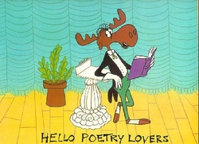

Object Poems:
1. Select a picture of an object (or just picture an object in your mind).
2. Read the following excerpt from Gift from the Sea by Anne Morrow Lindbergh. As you read, notice the comparisons and the descriptions of those comparisons.
This snail shell, round, full and glossy as a horse chestnut. Comfortable and compact, it sits curled up like a cat in the hollow of my hand. Milky and opaque, it has the pinkish bloom of the sky on a summer evening, ripening to rain. On its smooth symmetrical face is pencilled with precision a perfect spiral, winding inward to the pinpoint center of the shell, the tiny dark core of the apex, the pupil of the eye. It scares me, this mysterious single eye -- and I stare back.Now, it is the moon, solitary in the sky, full and round, replete with power. Now it is the eye of the cat that brushes noiselessly through long grass at night. Now is is an island, set in ever-widening circles of waves, alone, self-contained, serene.3.
Directions: In poetic form write a description of your object like the one Anne Morrow Lindbergh did in which you compare the object to as many things -- sights, sounds, tastes, textures, smells -- as you can imagine. Let your imagination run free. Think of the most unique comparisons that you can. Then write a poem, including six (or fewer) of these comparisons and their descriptions (how does your object look like a mountain, etc.). Do not use rhyme.
4. To help you begin, answer the following questions about your object: What does it look like? How or why does it look like that? What colors do you see? What do the colors remind you of? What does it smell like? What does it feel like?
5. Here is a guide to help you structure your poem. It is a poetic frame based loosely on the Lindbergh passage above:
First it is....
And then it is like....
And then it is like....
And now it becomes....
And now it is....